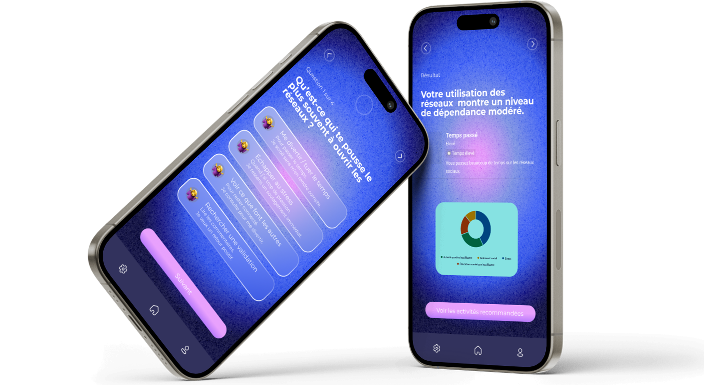
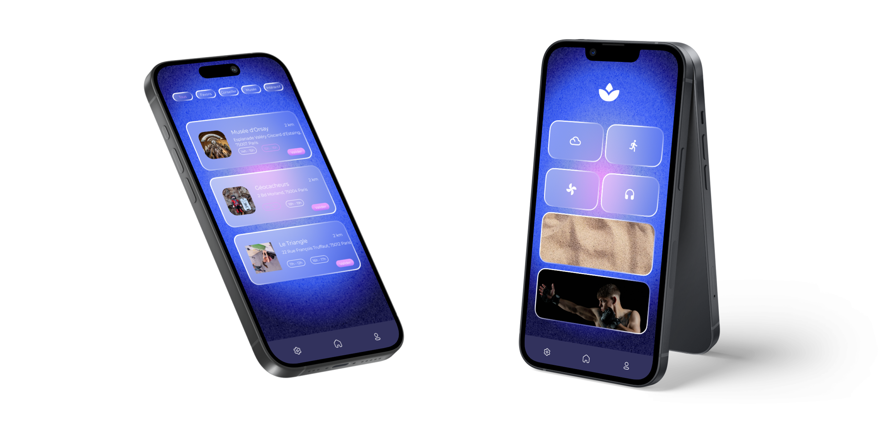
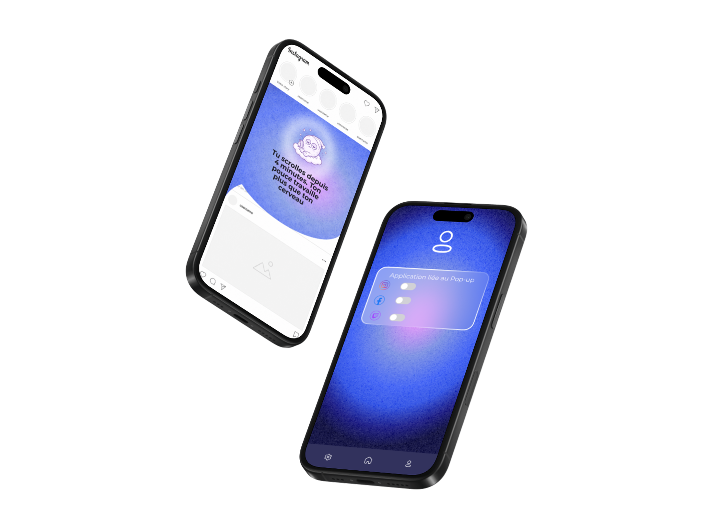
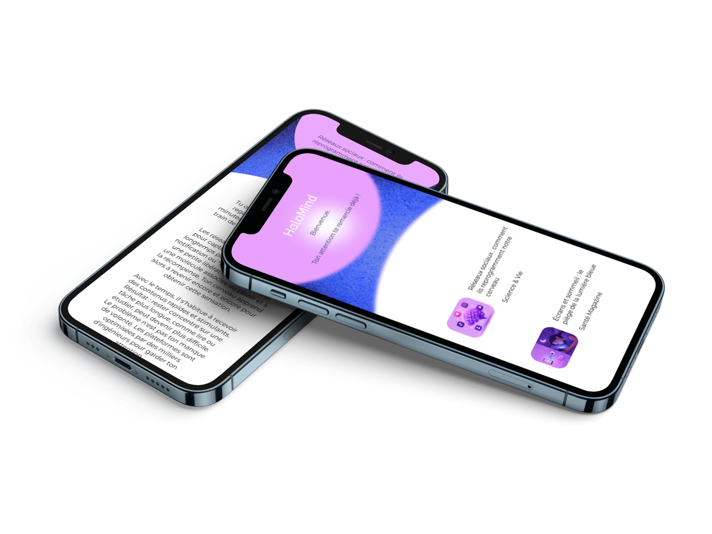
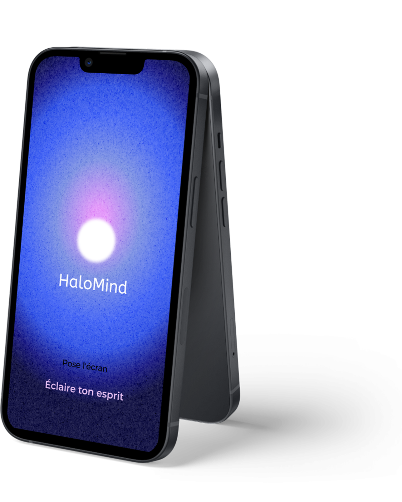

FONCTIONNALITÉ

Pose l'écran
Éclaire ton esprit
CONTEXTE
Pourquoi cette app ?
Afin d’aider sur la SANTÉ MENTAL par
rapport aux problèmes d’ADDICTIONS des
RÉSEAUX de nos JEUNES et JEUNES
ADULTES via des habitudes numériques
offert par nos fonctionnalité FONCTIONNALITÉ





Amandine, 16 ans
Etudiante
“Je passais mes nuits sur TikTok et Snap. Avec les défis de l'appli, je lâche enfin mon tel à 21h30. Je dors trop bien et je revis !”
Lucas, 24 ans
Sans activité
“Je scrollais sur Insta et TikTok toute la journée jusqu'à faire des nuits blanches. L'appli m'a mis un gros stop pour reprendre un rythme sain.”
Ines, 30 ans
Salarié
“Ouvrir Instagram en bossant était un réflexe qui me stressait trop. La fonction "Activité" a cassé cette habitude, je revis.”
HaloMind
pour un halo de bonheur
Bonne santé et bien-être
Sevrage numérique
Jeunes et jeunes adultes
